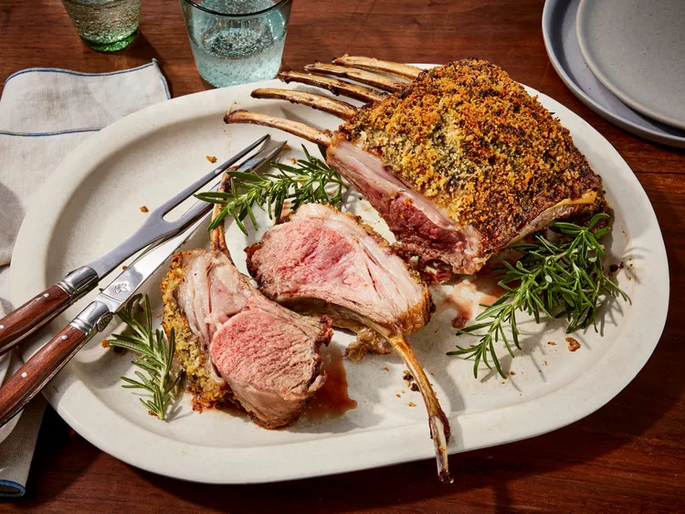

Roasted Rack of Lamb

Photo By Dotdash Meredith Food Studios
Description
"A rack of lamb is topped with a herby crust before it's roasted. The lamb always comes out juicy and tender" - All Recipes (dot) com
The preparation takes 15min plus 20min cooking and 10min for rest the meat. It servers 4 persons
Ingredients
- ½ cup fresh bread crumbs
- 2 tablespoons minced garlic
- 2 tablespoons chopped fresh rosemary
- 1 teaspoon salt
- ¼ teaspoon black pepper
- 2 tablespoons olive oil
- 1 (7 bone) rack of lamb, trimmed and frenched
- 1 teaspoon salt
- 1 teaspoon black pepper
- 2 tablespoons olive oil
- 1 tablespoon Dijon mustard
Steps
- Gather all ingredients. Preheat the oven to 450 degrees F (230 degrees C). Move the oven rack to the center position.
- Combine bread crumbs, garlic, rosemary, 1 teaspoon salt, and 1/4 teaspoon pepper in a small bowl; stir in 2 tablespoons olive oil to moisten the mixture. Set aside.
- Season rack of lamb all over with 1 teaspoon salt and 1 teaspoon pepper.
- Heat 2 tablespoons olive oil in a large heavy oven-proof skillet over high heat. Add lamb and sear on all sides, about 1 to 2 minutes: set lamb aside for a few minutes.
- Brush lamb with mustard and roll in bread crumb mixture until evenly coated. Cover the ends of the bones with foil to prevent charring.
- Arrange the breaded rack of lamb bone-side down in the same skillet. Roast in preheated oven for 12 to 18 minutes for medium; an instant-read thermometer inserted into the center should read at least 130 degrees F (54 degrees C), or continue to cook to desired doneness.
- Remove lamb from the skillet and allow to rest for 5 to 7 minutes, loosely covered with foil, before carving between the ribs.
Source: All Recipes (dot) com
Main Page